3-1-软件包管理
一、Linux下软件包管理
㈠ 软件包类型
1 、 二进制包(已编译好)
什么是二进制包？有什么特点？
- 二进制包，指的是已经编译好了的软件包，只需要==直接安装==就可以使用。
- 二进制包，==不需要编译==，直接下载安装即可
- 二进制包，需要根据自己的计算机CPU以及操作系统去==选择合适==的
- 二进制包，命名方式一般为：python3-libs-3.6.8-18.el7.x86_64.rpm
- 二进制包，还有一种：mysql-5.5.32-linux2.6-x86_64.tar.gz（tar -zxvf 后可以直接解压使用，无须安装）
x86_64就是64位系统的软件包
noarch表示可以安装在任意的系统架构上。
2、源码包（程序源文件）
什么是源码包？有什么特点？
- 源码包，指的是程序员写的原始的==程序代码文件==，==不能==够==直接==在计算机上==运行==。
- 源码包，需要进行==编译==，变成==二进制的软件包后==，才可安装使用
- 源码包，一般可以在任何的计算机上安装使用
- 源码包，命名方式一般为：
软件包名.tar.gz软件包名.tar.bz2软件包名.tar.xz软件包名.zip
3、 二进制源码包(了解)
- 什么是二进制源码包？有什么特点？
- 二进制源码包，是一个==半成品==，安装后不能直接使用
- 二进制源码包，需要使用
rpmbuild工具重建成真正的rpm包或者重建成源码包才可安装使用 - 二进制源码包，命名方式一般为：
- mysql-community-5.7.25-1.el6.==src.==rpm
- mysql-community-5.7.25-1.el7.==src==.rpm
㈡ 常见的二进制软件包格式
| 系统平台 | 包类型 | 工具 | 在线安装 |
|---|---|---|---|
| RedHat/Centos/Fedora/SUSE | rpm | rpm,rpmbuild | yum |
| Ubuntu/Debian | deb | dpkg | apt |
㈢ 总结二进制包和源码包区别
| 软件包类型 | 是否编译 | 安装难易程度 | 可定制性 |
|---|---|---|---|
| 二进制包 | 否 | 易(直接安装) | 差 |
| 源码包 | 是 | 难(配置—>编译—>安装) | 好 |
二、Linux系统中软件包安装方式
㈠ 二进制包（rpm包）
1、==rpm工具安装==
- 首先，需要下载好rpm包到本地
- 然后，直接使用rpm工具安装
2、yum工具安装
- 首先，需要配置软件仓库(里面存放很多rpm软件包)
- 然后，使用yum工具安装，自动下载rpm
㈡ 源码包（tar.gz）
1、根据需求配置
功能的定制，比如给nginx、mysql各类软件，安装时候就加上一些额外的功能，如https的支持。
2、编译
使用编译器编译成二进制的软件包，源代码 > 可安装的软件包。
3、安装
将软件包安装到指定位置
4、源码包安装优点
- 可以在==任意平台==上编译安装，编译出来的软件包非常适应所在机器。
- 可以在编译的时候，通过配置，==对某些功能进行定制==，开启或关闭相应的功能。
三、==二进制rpm包如何管理(重点)==
㈠ 如何获取rpm包
Linux只是内核，Linux发行版本：GNU/Linux
- RedHat/Centos光盘或官方网站 ftp://ftp.redhat.com
- 推荐网站
- www.rpmfind.net
- rpm.pbone.net
- 相应软件官方网站
㈡ 如何选择合适的rpm包
- 选择==适合当前系统==的版本号
- 找不到适合的，才去尝试别的系统版本号
- el6兼容el5；el5无法安装 el6
- 选择==适合当前计算机cpu==的架构
- x86_64包，只能安装在64位的系统上
- i386,i586,i686的软件包可以安装在32和64位系统上
- noarch表示这个软件包与硬件构架无关，可以通用
- 32位系统不能安装64位包
建议： 建议不要跨大版本号去安装软件包，尽量使用当前系统版本自带软件包安装
㈢ 如何管理rpm包
1、==rpm工具管理==
① rpm工具安装rpm包
# rpm -ivh 软件包
# rpm -ivh python3-libs-3.6.8-18.el7.x86_64.rpm
注意：软件包的名字必须写全，xxx.rpm
② rpm工具卸载rpm包
# rpm -e 软件包名字
# rpm -e python3-libs
注意：卸载软件只需要跟软件包名字即可
③ rpm包的升级rpm包
# rpm -Uvh 软件包
或者
# rpm -Fvh 软件包
选项说明：
-v:输出详细信息
-h:打印散列标记，一般和-v一起使用
-U:升级软件包，如果该软件包没安装，会自动帮你安装
-F:升级软件包，如果该软件包没安装，不会自动帮你安装
④查看rpm包相关信息
查看已经安装的软件的文件列表
rpm -ql 软件包名
查看未安装的rpm包里的文件列表
rpm -qlp 软件包(xxx.rpm)
查看已经安装的所有rpm包
rpm -qa 软件包名
查看已经安装软件的文档列表
rpm -qd 软件包名
查看已经安装软件的配置文件
rpm -qc 软件包名
查看已经安装软件的详细信息
rpm -qi 软件包名
查看指定文件来自哪个rpm包
rpm -qf 文件名
⑤ rpm工具其他安装选项
--force 表示强制
rpm -ivh 软件包 --force 强制安装软件包
rpm -e 软件包名 --force 强制卸载软件包
--nodeps 忽略依赖关系
rpm -ivh 软件包 --nodeps 忽略依赖关系安装
rpm -e 软件包 --nodeps 忽略依赖关系卸载
其他了解：
rpm --import key_file 导入公钥用于检查rpm文件的签名
rpm --checksig package.rpm 检查rpm包的签名
⑥ 工作里怎么用rpm（重点）
RPM包管理：以上操作都比较简单，但是在实际应用过程中，可能会遇到问题，很多rpm软件包在安装时都会提示软件依赖。那这个问题如何解决呢？
方法一：根据提示一个一个软件包安装，先解决依赖在回来安装软件
方法二：使用yum install 安装rpm软件包
# yum install 软件名称.rpm
以上安装方式的最大好处是，如果安装软件时，产生了依赖，不用担心，yum会自动帮助我们解决这些问题的！
2、yum工具管理
核心：需要有一个==软件仓库==，软件仓库指的是来存放软件包和软件包之间的依赖关系地方。
① yum工具安装rpm包
# yum -y install 软件包名
# yum -y groupinstall "包组名"
注意：
1.其中，-y选项表示取消交互
2.包组里面包含很多的软件包。
② yum工具卸载rpm包
# yum -y remove 软件包名
# yum -y groupremove "包组名"
③ yum工具升级rpm包
# yum update 软件包名
④ yum工具其他相关选项
# yum list 列出仓库里的软件包
# yum repolist 列出可用仓库
# yum clean all 清空yum缓存
# yum makecache 创建yum缓存
四、源码安装（重点）
㈠ 根据需求配置
在编译时候，你可以加上这些参数，指定一些额外的功能
--prefix=... Directories to put files in /usr/local 软件家目录
--bindir=... $prefix/bin 命令的目录
--etcdir=... $prefix/etc 配置文件的目录
--mandir=... $prefix/share/man man 文档路径
--locale=... $prefix/share/locale 语言编码
...
㈡ 编译
make （使用gcc编译器进行编译）
㈢ 安装
make install 类似 rpm -ivh
㈣ 源码安装示例
1、 安装需求
- 安装cmatrix(骇客帝国)软件包
- 确认软件可用
2、安装步骤
1.什么时候选择编译安装
- 对软件有额外的要求，如
- 性能
- 安装路径
- 额外功能开启
2.软件编译安装前的环境准备（如编译工具等）
有趣的小火车命令（yum）
当你安装一个工具，它没什么额外的要求，只需要简单安装使用，你可以不用编译，选择最方便的办法
安装epel源
yum -y install epel-release
安装小火车命令，sl
[root@yuchao-linux01 opt]# yum install -y sl
运行小火车一次
sl
看看下载sl软件的二进制安装包
yum install --downloadonly --downloaddir=/tmp/ sl
如果软件已经安装过了，你得使用reinstall
[root@yuchao-linux01 ~]# yum reinstall --downloadonly --downloaddir=/tmp/ sl
找到这个sl软件包
[root@yuchao-linux01 ~]# ls /tmp/sl-5.02-1.el7.x86_64.rpm
/tmp/sl-5.02-1.el7.x86_64.rpm
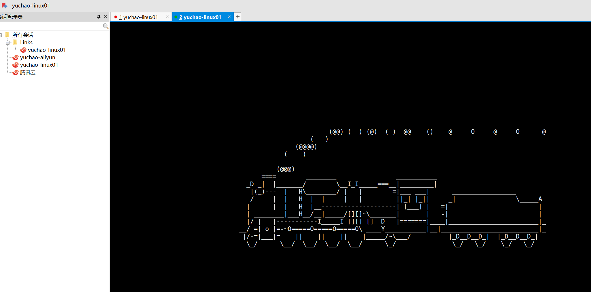
无限死循环，重复运行小火车，每隔一秒钟运行一次
while true;do sl;sleep 1;done
酷炫的骇客帝国（编译）
1.编译环境准备，下载源码
骇客帝国是一个linux屏保软件，无法直接通过yum直接安装，它不在yum仓库里，没有现成的rpm包给你用。
需要下载源代码包。
1.需要wget命令，在线下载
yum install -y wget //安装wget
2.下载源代码
[root@yuchao-linux01 opt]# wget http://jaist.dl.sourceforge.net/project/cmatrix/cmatrix/1.2a/cmatrix-1.2a.tar.gz
3.查看源代码
[root@yuchao-linux01 opt]# ll
total 76
-rw--w--w- 1 root root 74376 Apr 1 2002 cmatrix-1.2a.tar.gz
4.查看源码包内容
[root@yuchao-linux01 opt]# tar -tf cmatrix-1.2a.tar.gz
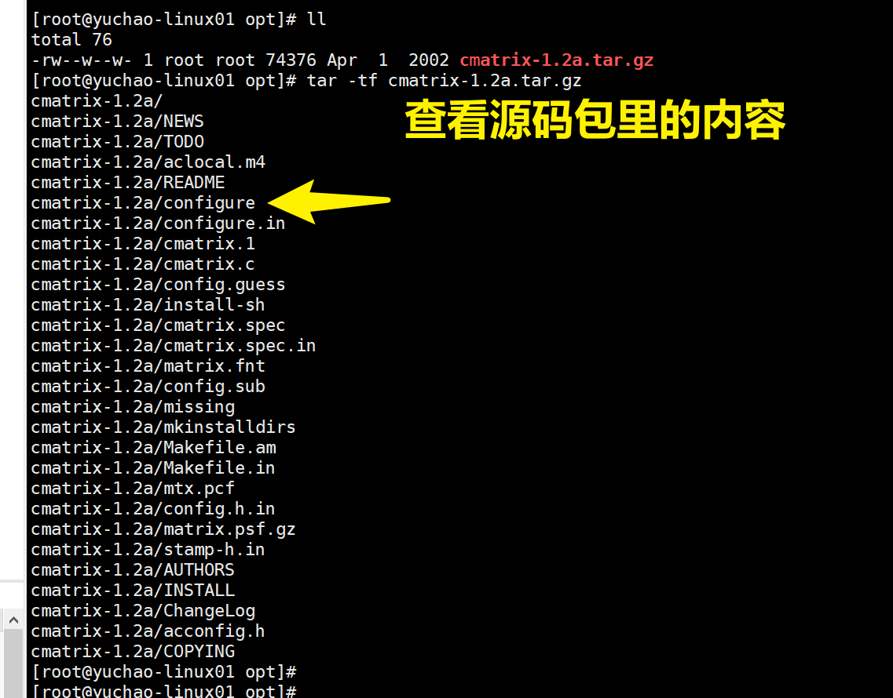
安装编译环境，依赖环境
gcc make 编译器
ncurses-devel 一些文本游戏都依赖这个库
yum install -y gcc make gcc-c++ ncurses-devel
2.编译三部曲
解压缩cmatrix源代码，开始编译三部曲
1.对编译环境配置，执行configure脚本，比如执行安装路径
1.解压缩，进入目录
[root@yuchao-linux01 opt]# ls
cmatrix-1.2a.tar.gz
[root@yuchao-linux01 opt]#
[root@yuchao-linux01 opt]# tar -zxf cmatrix-1.2a.tar.gz
[root@yuchao-linux01 opt]# cd cmatrix-1.2a/
[root@yuchao-linux01 cmatrix-1.2a]# ls
acconfig.h cmatrix.1 config.guess configure.in Makefile.am missing README
aclocal.m4 cmatrix.c config.h.in COPYING Makefile.in mkinstalldirs stamp-h.in
AUTHORS cmatrix.spec config.sub INSTALL matrix.fnt mtx.pcf TODO
ChangeLog cmatrix.spec.in configure install-sh matrix.psf.gz NEWS
[root@yuchao-linux01 cmatrix-1.2a]#
2.配置安装路径，注意，是源码目录内
[root@yuchao-linux01 cmatrix-1.2a]# ./configure --prefix=/opt/cmatrix
2.对源码编译，对系统环境检查等
[root@yuchao-linux01 cmatrix-1.2a]# make
gcc -DHAVE_CONFIG_H -I. -I. -I. -g -O2 -Wall -Wno-comment -c cmatrix.c
gcc -g -O2 -Wall -Wno-comment -o cmatrix cmatrix.o -lncurses -lncurses
[root@yuchao-linux01 cmatrix-1.2a]#
3.安装到指定路径
[root@yuchao-linux01 cmatrix-1.2a]# make install
make[1]: Entering directory `/opt/cmatrix-1.2a'
/bin/sh ./mkinstalldirs /opt/cmatrix/bin
mkdir /opt/cmatrix
mkdir /opt/cmatrix/bin
/usr/bin/install -c cmatrix /opt/cmatrix/bin/cmatrix
make install-man1
make[2]: Entering directory `/opt/cmatrix-1.2a'
/bin/sh ./mkinstalldirs /opt/cmatrix/man/man1
mkdir /opt/cmatrix/man
mkdir /opt/cmatrix/man/man1
/usr/bin/install -c -m 644 ./cmatrix.1 /opt/cmatrix/man/man1/cmatrix.1
make[2]: Leaving directory `/opt/cmatrix-1.2a'
Installing matrix fonts in /usr/lib/kbd/consolefonts...
make[1]: Leaving directory `/opt/cmatrix-1.2a'
[root@yuchao-linux01 cmatrix-1.2a]#
4.检查软件
[root@yuchao-linux01 cmatrix-1.2a]# cd /opt/
[root@yuchao-linux01 opt]# ls
cmatrix cmatrix-1.2a cmatrix-1.2a.tar.gz
[root@yuchao-linux01 opt]# cd /opt/cmatrix
[root@yuchao-linux01 cmatrix]# ls
bin man
[root@yuchao-linux01 cmatrix]# ls bin
cmatrix
5.执行编译好的软件命令，注意这里是绝对路径
[root@yuchao-linux01 cmatrix]# /opt/cmatrix/bin/cmatrix
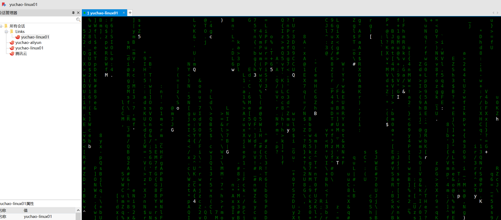
按q退出。
3.环境变量配置
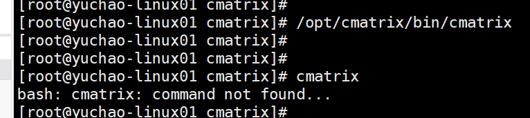
我们会发现直接执行命令，是找不到这个命令的，为什么？
因为PATH的存在。
- ==分析错误产生的可能原因==
- 命令没有安装
- ==命令安装了但是找不到==
原因：命令安装了但是不能找到，原因是不知道去
/opt/cmatrix/bin/cmatrix目录里找。 说明：系统中有==PATH==环境变量，该变量里保存的是命令的路径，只要PATH中有命令的所在路径，就可以找到。 - 命令敲错了（小白经常犯这个错）
- 解决问题
五、学习PATH
windows下的PATH变量
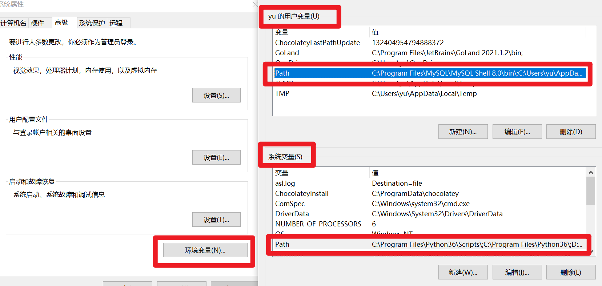
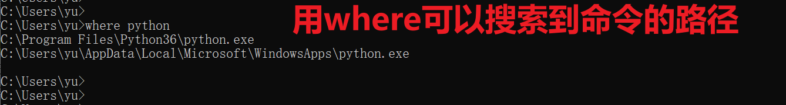
linux下的PATH变量
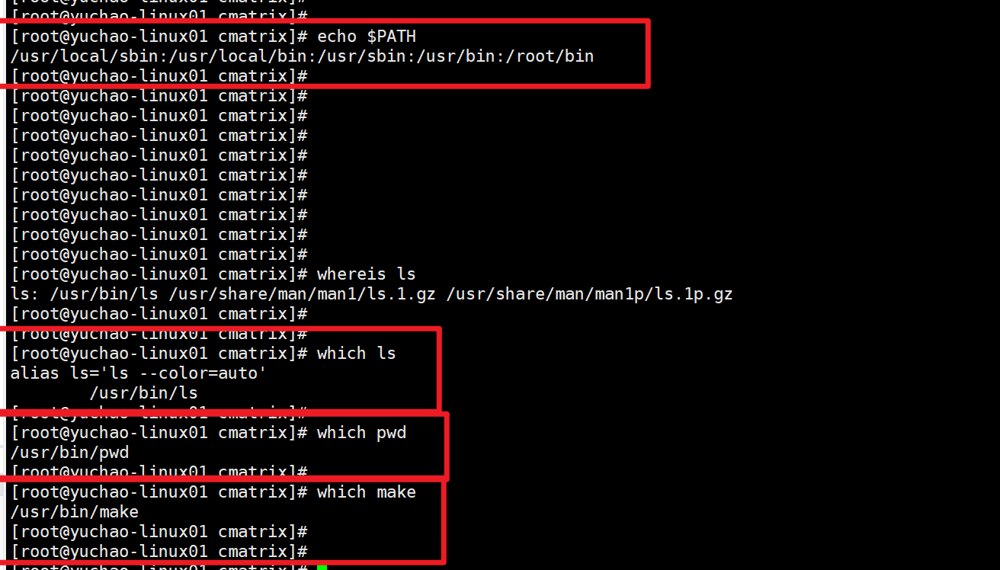
path是如何工作的。
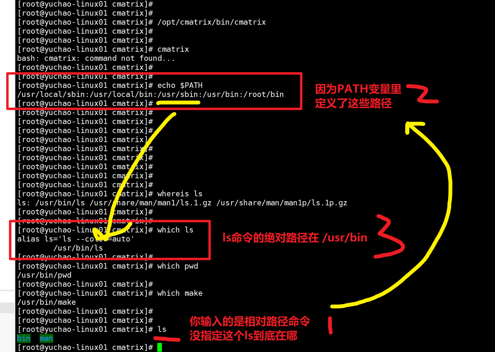
1、PATH变量修改，添加路径
我们直接执行cmatrix发现没法使用，因此给它加入PATH
1.1、PATH临时添加
linux下修改变量的值，命令行里直接敲打，只对当前会话生效，重启，关闭会话后就丢失了。
export PATH=$PATH:/opt/cmatrix/bin/
可以用了
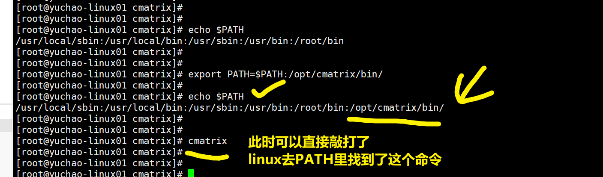
关闭会话后，这个变量值丢失了，恢复原样了。
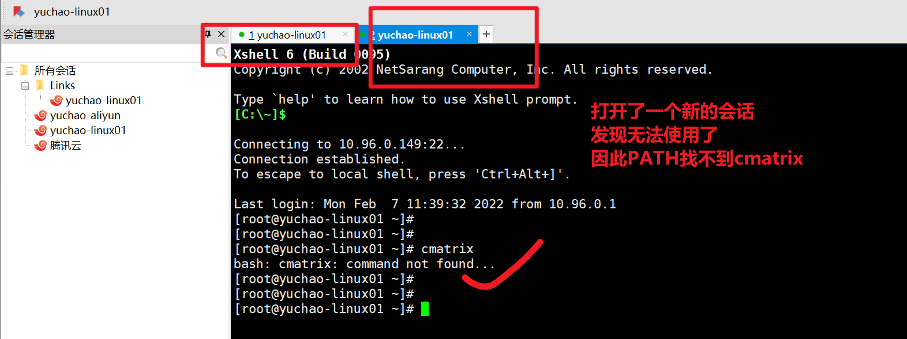
2、永久修改PATH
只需要吧这个修改语句，写入文件里，每次linux登录都会读取这个配置，即可实现。
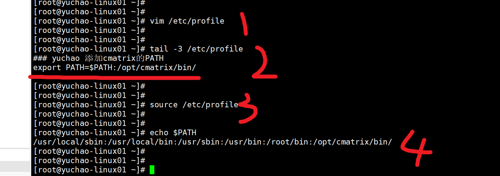
[root@yuchao-linux01 ~]#
[root@yuchao-linux01 ~]#
[root@yuchao-linux01 ~]# vim /etc/profile
[root@yuchao-linux01 ~]#
[root@yuchao-linux01 ~]#
[root@yuchao-linux01 ~]# tail -3 /etc/profile
### yuchao 添加cmatrix的PATH
export PATH=$PATH:/opt/cmatrix/bin/
[root@yuchao-linux01 ~]#
[root@yuchao-linux01 ~]#
[root@yuchao-linux01 ~]# source /etc/profile
[root@yuchao-linux01 ~]#
[root@yuchao-linux01 ~]#
[root@yuchao-linux01 ~]# echo $PATH
/usr/local/sbin:/usr/local/bin:/usr/sbin:/usr/bin:/root/bin:/opt/cmatrix/bin/
[root@yuchao-linux01 ~]#
[root@yuchao-linux01 ~]#
[root@yuchao-linux01 ~]#
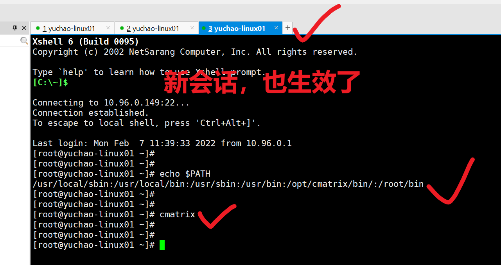
3、添加man手册
对于源码编译的软件，默认可能不存在man手册，找不到使用教程，可以这么来。
1.找到软件本身提供的man手册目录
[root@yuchao-linux01 ~]# ls /opt/cmatrix
bin man
2.加入linux的man命令配置文件
1.打开配置文件
[root@yuchao-linux01 ~]# vim /etc/man_db.conf
加入如下内容
## yuchao 添加cmatrix的man路径
MANDATORY_MANPATH /opt/cmatrix/man
2.加入后，即可使用man手册，查看软件帮助信息了
[root@yuchao-linux01 ~]# man cmatrix
4、卸载编译软件
当你编译的软件不想要了，如何卸载。
1.进入软件源码
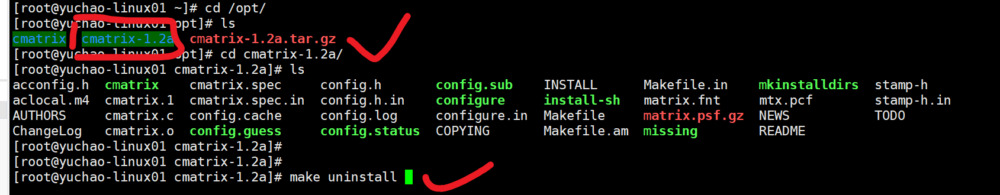
[root@yuchao-linux01 ~]# cd /opt/
[root@yuchao-linux01 opt]# ls
cmatrix cmatrix-1.2a cmatrix-1.2a.tar.gz
[root@yuchao-linux01 opt]# cd cmatrix-1.2a/
[root@yuchao-linux01 cmatrix-1.2a]# ls
acconfig.h cmatrix cmatrix.spec config.h config.sub INSTALL Makefile.in mkinstalldirs stamp-h
aclocal.m4 cmatrix.1 cmatrix.spec.in config.h.in configure install-sh matrix.fnt mtx.pcf stamp-h.in
AUTHORS cmatrix.c config.cache config.log configure.in Makefile matrix.psf.gz NEWS TODO
ChangeLog cmatrix.o config.guess config.status COPYING Makefile.am missing README
[root@yuchao-linux01 cmatrix-1.2a]#
[root@yuchao-linux01 cmatrix-1.2a]#
[root@yuchao-linux01 cmatrix-1.2a]# make uninstall
2.执行卸载make uninstall
[root@yuchao-linux01 cmatrix-1.2a]# make uninstall
list='cmatrix'; for p in $list; do \
rm -f /opt/cmatrix/bin/`echo $p|sed 's/$//'|sed 's,x,x,'|sed 's/$//'`; \
done
make uninstall-man1
make[1]: Entering directory `/opt/cmatrix-1.2a'
rm -f /opt/cmatrix/man/man1/cmatrix.1
make[1]: Leaving directory `/opt/cmatrix-1.2a'
[root@yuchao-linux01 cmatrix-1.2a]#
你会发现，该骇客帝国命令消失了
[root@yuchao-linux01 cmatrix-1.2a]# ls /opt/cmatrix
bin man
[root@yuchao-linux01 cmatrix-1.2a]# ls /opt/cmatrix/bin/
[root@yuchao-linux01 cmatrix-1.2a]#
[root@yuchao-linux01 cmatrix-1.2a]# cmatrix
-bash: /opt/cmatrix/bin/cmatrix: No such file or directory
3.卸载编译、配置过程
[root@yuchao-linux01 cmatrix-1.2a]# make distclean
rm -f config.h
rm -f *.tab.c
rm -f TAGS ID
rm -f Makefile cmatrix.spec
rm -f config.cache config.log stamp-h stamp-h[0-9]*
test -z "cmatrix" || rm -f cmatrix
rm -f *.o core *.core
rm -f config.status
5、总结
编译安装三部曲、卸载三部曲，超哥都给大家讲完了。
编译，就是通过编译工具，把高级语言(码农写的C语言程序)变成计算机可以识别的2进制语言，计算机只认识1和0。
编译程序，就是使用编译工具，把高级语言开发的程序变成计算机可以识别的二进制程序，把一堆C语言写的源码，变成你可以直接执行的一个命令。
六、免安装（二进制包）
- 上述说过了二进制包，包括了
- rpm格式（需要rpm -ivh安装）
- tar.gz格式（直接tar -zxvf解压即可）
- 一般说的二进制包，指的更多是rpm包。
- 我们可以用vim编辑器，打开/usr/bin/ls或者，windows下的exe文件、或者rpm安装包，都是010101二进制代码（计算机以16进制显示），都是给机器阅读的二进制数据。人类无法阅读了。
二进制包特点
二进制软件包和 rpm 软件包区别在于
1. rpm包是打包好的安装程序，关于软件安装路径固定好了，以及配置文件一般默认放在/etc下了，二进制软件包，所有配置文件，可执行程序，都在压缩包里。
2.rpm包安装的程序，卸载时需要清理较多目录文件，而二进制安装包，只需要删除一个文件夹即可。
3. rpm包涉及关系，升级麻烦，二进制包只需要删除旧的软件，替换为新的即可。
6.1 二进制方式，安装java
1.下载二进制java的软件包
https://yuchaoit.cn/jdk-8u221-linux-x64.tar.gz
2.解压缩即可
[root@yuchao-linux01 opt]# tar -zxvf jdk-8u221-linux-x64.tar.gz
[root@yuchao-linux01 opt]# ls
jdk1.8.0_221 jdk-8u221-linux-x64.tar.gz
3.创建软连接
[root@yuchao-linux01 opt]# ln -s jdk1.8.0_221 jdk
[root@yuchao-linux01 opt]#
[root@yuchao-linux01 opt]# ll
total 190524
lrwxrwxrwx 1 root root 12 Mar 19 15:11 jdk -> jdk1.8.0_221
drwxr-xr-x 7 10 143 245 Jul 4 2019 jdk1.8.0_221
-rw-r--r-- 1 root root 195094741 Mar 19 15:09 jdk-8u221-linux-x64.tar.gz
4.写入PATH变量
cp /etc/profile{,.bak}
cat >>/etc/profile <<EOF
export JAVA_HOME=/opt/jdk
export PATH=$PATH:$JAVA_HOME/bin
EOF
5.检查PATH
# 注销登录后，查看PATH
exit
# 再次登录
[root@yuchao-linux01 opt]# echo $PATH
/usr/local/sbin:/usr/local/bin:/usr/sbin:/usr/bin:/root/bin:/bin:/opt/jdk/bin
6.验证java是否可用
[root@yuchao-linux01 opt]# java -version
java version "1.8.0_221"
Java(TM) SE Runtime Environment (build 1.8.0_221-b11)
Java HotSpot(TM) 64-Bit Server VM (build 25.221-b11, mixed mode)
7.试试java的hello world
先编译，再运行
准备代码
[root@yuchao-linux01 opt]# cat HelloWorld.java
public class HelloWorld {
public static void main(String []args) {
System.out.println("超哥带你学linux");
}
}
编译代码，再运行
[root@yuchao-linux01 opt]# javac HelloWorld.java
[root@yuchao-linux01 opt]# java HelloWorld
超哥带你学linux
确认java正确可以使用了。
你已经配置好了java开发环境。
七、Ubuntu软件包管理
7.0 准备好乌班图机器
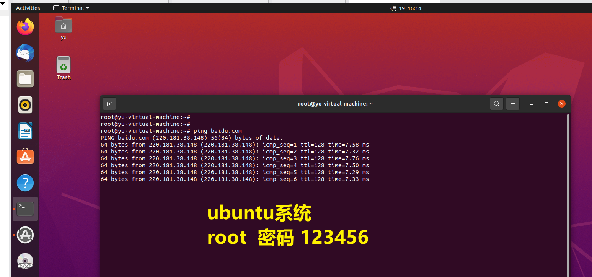
开启ssh服务
1.检查是否安装了ssh服务端，默认是没开启的，只安装了客户端
dpkg -l | grep ssh
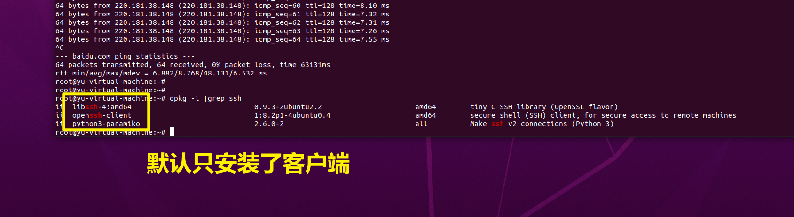
2.安装服务端
sudo apt-get install openssh-server
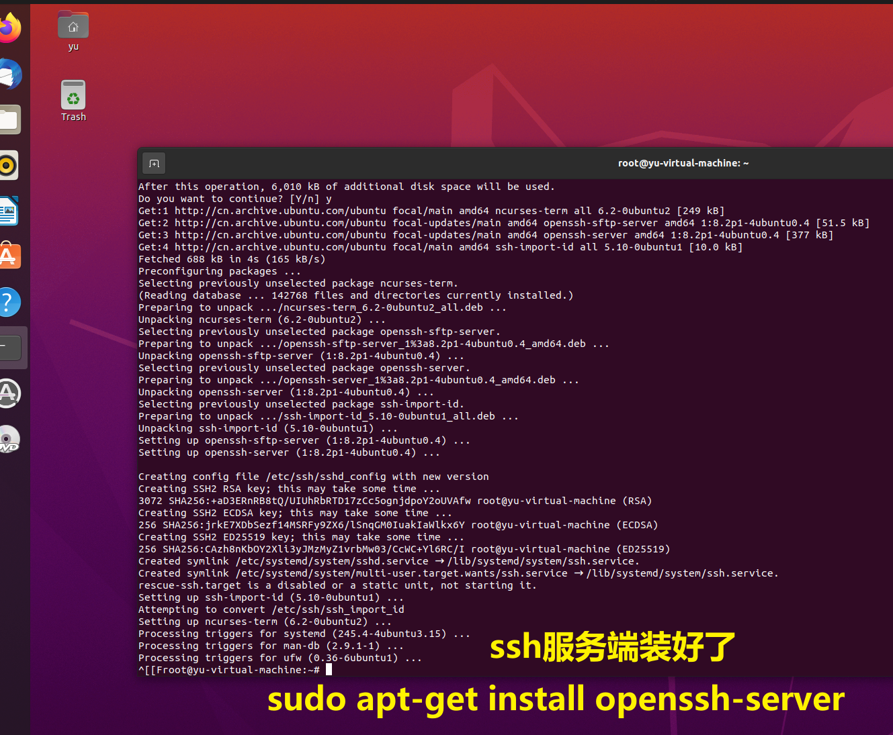
再次查看ssh服务端
dpkg -l | grep ssh
如果看到sshd那说明ssh-server已经启动了。
如果没有则可以这样启动：sudo /etc/init.d/ssh start或sudo service ssh start
查看ubuntu机器ip，远程连接即可
root@yu-virtual-machine:~# ip addr
1: lo: <LOOPBACK,UP,LOWER_UP> mtu 65536 qdisc noqueue state UNKNOWN group default qlen 1000
link/loopback 00:00:00:00:00:00 brd 00:00:00:00:00:00
inet 127.0.0.1/8 scope host lo
valid_lft forever preferred_lft forever
inet6 ::1/128 scope host
valid_lft forever preferred_lft forever
2: ens33: <BROADCAST,MULTICAST,UP,LOWER_UP> mtu 1500 qdisc fq_codel state UP group default qlen 1000
link/ether 00:0c:29:47:5e:4d brd ff:ff:ff:ff:ff:ff
altname enp2s1
inet 10.96.0.133/24 brd 10.96.0.255 scope global dynamic noprefixroute ens33
valid_lft 994sec preferred_lft 994sec
inet6 fe80::c9f7:6a9f:7161:1db/64 scope link noprefixroute
valid_lft forever preferred_lft forever
默认ubuntu禁止了root登录，用普通用户登录，然后sudo即可
# yu，密码123456
ssh yu@10.96.0.133
Connecting to 10.96.0.133:22...
Connection established.
To escape to local shell, press 'Ctrl+Alt+]'.
Welcome to Ubuntu 20.04.4 LTS (GNU/Linux 5.13.0-30-generic x86_64)
* Documentation: https://help.ubuntu.com
* Management: https://landscape.canonical.com
* Support: https://ubuntu.com/advantage
13 updates can be applied immediately.
12 of these updates are standard security updates.
To see these additional updates run: apt list --upgradable
Your Hardware Enablement Stack (HWE) is supported until April 2025.
Last login: Sat Mar 19 16:22:24 2022 from 10.96.0.1
yu@yu-virtual-machine:~$
yu@yu-virtual-machine:~$
yu@yu-virtual-machine:~$ sudo su -
[sudo] password for yu:
root@yu-virtual-machine:~#
root@yu-virtual-machine:~#
root@yu-virtual-machine:~#
root@yu-virtual-machine:~# whoami
root
7.1 ubuntu软件包安装方式
和centos管理方式一样，只不过软件包的格式，不是rpm包，而是deb包，但是其他管理方式，如源码编译三部曲，二进制包安装都一样。
| 软件包种类 | 特点 | 缺点 |
|---|---|---|
| deb包 | 编译好了，安装简单，安装参数固定 | 软件版本较低，无法定制化安装 |
| 源码包 | 手动编译安装，繁琐，容易出错 | 软件版本自由，安装自由扩展 |
| 二进制包 | 解压即用 | 无法源码，无法定制化 |
7.2 dpkg安装nginx
dpkg相当于centos的rpm管理命令，用于管理已经下载好的本地软件包，例如
*.rpm后缀的软件包
同理就是*.deb软件包
常用命令参数
dpkg -i package.deb #安装包
dpkg -r package #删除包，保留配置文件
dpkg -P package #删除包（包括配置文件）
dpkg -L package #列出与该包关联的文件
dpkg -l package #显示该包的版本
dpkg --unpack package.deb #解开 deb 包的内容
dpkg -S keyword #搜索所属的包内容
dpkg -s package # 查询软件包详细信息
dpkg -l #列出当前已安装的包
dpkg -c package.deb #列出 deb 包的内容
dpkg --configure package #配置包
dpkg命令实践
1. 准备好软件包，从于超老师要即可，yuchaoit.cn/nginx_1.18.0-2~focal_amd64.deb
yu@yu-virtual-machine:~$ ll nginx_1.18.0-2~focal_amd64.deb
-rwxr-xr-x 1 yu yu 853262 Mar 19 17:28 nginx_1.18.0-2~focal_amd64.deb*
2.查看软件包信息
yu@yu-virtual-machine:~$ dpkg -c nginx_1.18.0-2~focal_amd64.deb
3.安装软件
yu@yu-virtual-machine:~$ sudo dpkg -i nginx_1.18.0-2~focal_amd64.deb
[sudo] password for yu:
Selecting previously unselected package nginx.
(Reading database ... 145615 files and directories currently installed.)
Preparing to unpack nginx_1.18.0-2~focal_amd64.deb ...
----------------------------------------------------------------------
Thanks for using nginx!
Please find the official documentation for nginx here:
* http://nginx.org/en/docs/
Please subscribe to nginx-announce mailing list to get
the most important news about nginx:
* http://nginx.org/en/support.html
Commercial subscriptions for nginx are available on:
* http://nginx.com/products/
----------------------------------------------------------------------
Unpacking nginx (1.18.0-2~focal) ...
Setting up nginx (1.18.0-2~focal) ...
Created symlink /etc/systemd/system/multi-user.target.wants/nginx.service → /lib/systemd/system/nginx.service.
Processing triggers for systemd (245.4-4ubuntu3.15) ...
Processing triggers for man-db (2.9.1-1) ...
yu@yu-virtual-machine:~$
4.启动ubuntu下的nginx程序
yu@yu-virtual-machine:~$ systemctl start nginx
==== AUTHENTICATING FOR org.freedesktop.systemd1.manage-units ===
Authentication is required to start 'nginx.service'.
Authenticating as: yu,,, (yu)
Password:
==== AUTHENTICATION COMPLETE ===
5.测试访问nginx
6.最后再卸载nginx
yu@yu-virtual-machine:~$ sudo dpkg -P nginx
(Reading database ... 148196 files and directories currently installed.)
Removing nginx (1.18.0-2~focal) ...
Processing triggers for man-db (2.9.1-1) ...
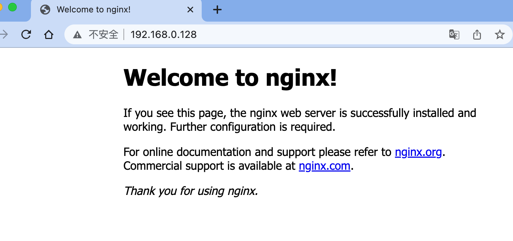
7.3 apt常用命令（参考yum）
apt是ubuntu下的包(deb)管理工具
1. apt类似centos7的yum
2. apt-get是第一版的包管理工具，最稳定
3. apt是改进后的包管理命令，功能更多
4. apt的源文件只有一个，而yum源会有很多文件。
apt怎么用
# 搜索软件包，类似于 rpm -qa |grep nginx
yu@yu-virtual-machine:~$ apt-cache search nginx
# 下载nginx的deb包，类似于yum获取rpm包。
apt download apache2
# 在线安装程序
yu@yu-virtual-machine:~$ sudo apt install apache2
# 重新安装程序
yu@yu-virtual-machine:~$ sudo apt --reinstall install apache2
# 卸载程序
apt remove apache2
# 启动apache2
==== AUTHENTICATING FOR org.freedesktop.systemd1.manage-units ===
Authentication is required to start 'apache2.service'.
Authenticating as: yu,,, (yu)
Password:
==== AUTHENTICATION COMPLETE ===
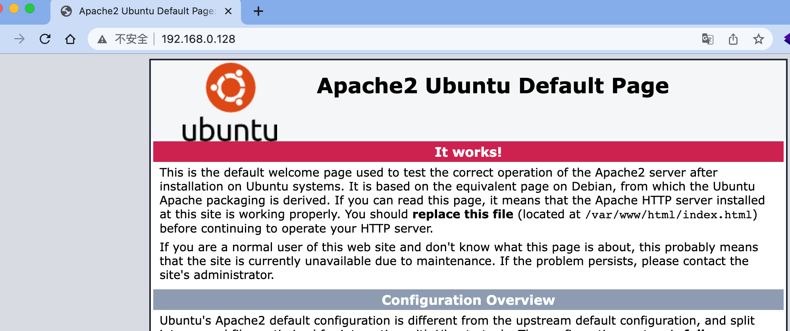
7.4 ubuntu搭建私有云网盘
1.配置apt源
yu@yu-virtual-machine:~$ sudo apt install vim
yu@yu-virtual-machine:~$ sudo cp /etc/apt/sources.list{,.bak}
yu@yu-virtual-machine:~$ sudo vim /etc/apt/sources.list
改为如下
yu@yu-virtual-machine:~$ cat /etc/apt/sources.list
# 默认注释了源码镜像以提高 apt update 速度，如有需要可自行取消注释
deb https://mirrors.tuna.tsinghua.edu.cn/ubuntu/ focal main restricted universe multiverse
# deb-src https://mirrors.tuna.tsinghua.edu.cn/ubuntu/ focal main restricted universe multiverse
deb https://mirrors.tuna.tsinghua.edu.cn/ubuntu/ focal-updates main restricted universe multiverse
# deb-src https://mirrors.tuna.tsinghua.edu.cn/ubuntu/ focal-updates main restricted universe multiverse
deb https://mirrors.tuna.tsinghua.edu.cn/ubuntu/ focal-backports main restricted universe multiverse
# deb-src https://mirrors.tuna.tsinghua.edu.cn/ubuntu/ focal-backports main restricted universe multiverse
deb https://mirrors.tuna.tsinghua.edu.cn/ubuntu/ focal-security main restricted universe multiverse
# deb-src https://mirrors.tuna.tsinghua.edu.cn/ubuntu/ focal-security main restricted universe multiverse
# 预发布软件源，不建议启用
# deb https://mirrors.tuna.tsinghua.edu.cn/ubuntu/ focal-proposed main restricted universe multiverse
# deb-src https://mirrors.tuna.tsinghua.edu.cn/ubuntu/ focal-proposed main restricted universe multiverse
yu@yu-virtual-machine:~$
2.更新apt源
yu@yu-virtual-machine:~$ sudo apt update
3.安装nginx+php
sudo apt install php7.4 php7.4-fpm php7.4-gd php7.4-curl php7.4-mbstring nginx unzip -y
查看nginx版本
yu@yu-virtual-machine:~$ nginx -v
nginx version: nginx/1.18.0 (Ubuntu)
4.修改nginx配置文件
yu@yu-virtual-machine:~$ sudo vim /etc/nginx/conf.d/yuchao_linux.conf
server{
listen 81;
server_name yuchao_linux.top;
root /code;
index index.php index.html;
location ~ \.php$ {
root /code;
fastcgi_pass 127.0.0.1:9000;
fastcgi_index index.php;
fastcgi_param SCRIPT_FILENAME $document_root$fastcgi_script_name;
include fastcgi_params;
}
}
5.设置php-fpm监听模式
yu@yu-virtual-machine:~$ sudo vim /etc/php/7.4/fpm/pool.d/www.conf
36 ;listen = /run/php/php7.4-fpm.sock
37 listen = 127.0.0.1:9000
6.下载网盘源代码，解压缩
yu@yu-virtual-machine:~$ sudo mkdir /code
yu@yu-virtual-machine:~$ cd /code
yu@yu-virtual-machine:/code$ sudo wget http://static.kodcloud.com/update/download/kodexplorer4.40.zip
yu@yu-virtual-machine:/code$ sudo unzip -d /code kodexplorer4.40.zip
yu@yu-virtual-machine:/code$ sudo chown -R www-data:www-data /code
7.启动测试访问
yu@yu-virtual-machine:/code$ sudo systemctl stop apache2.service
yu@yu-virtual-machine:/code$ sudo systemctl start nginx php7.4-fpm
8.访问ubuntu机器
http://192.168.0.128:81/index.php?user/login
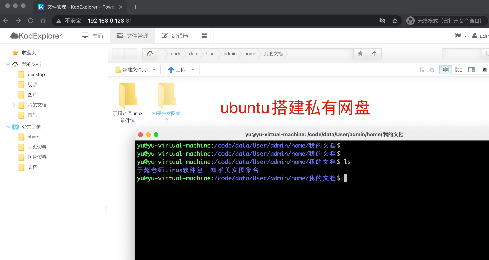
7.5 搭建博客系统
1.安装java环境
sudo apt install openjdk-8-jre-headless -y
2.查看java版本
yu@yu-virtual-machine:~$ sudo java -version
openjdk version "1.8.0_312"
OpenJDK Runtime Environment (build 1.8.0_312-8u312-b07-0ubuntu1~20.04-b07)
OpenJDK 64-Bit Server VM (build 25.312-b07, mixed mode)
3.下载博客源码
sudo wget https://dl.halo.run/release/halo-1.4.2.jar
4.运行博客
yu@yu-virtual-machine:/my-site$ sudo java -jar halo-1.4.2.jar
__ __ __
/ / / /___ _/ /___
/ /_/ / __ `/ / __ \
/ __ / /_/ / / /_/ /
/_/ /_/\__,_/_/\____/
Version: 1.4.2
2022-03-19 19:38:26.317 INFO 48910 --- [ main] run.halo.app.Application : Starting Application v1.4.2 on yu-virtual-machine with PID 48910 (/my-site/halo-1.4.2.jar started by root in /my-site)
2022-03-19 19:38:26.320 INFO 48910 --- [ main] run.halo.app.Application : No active profile set, falling back to default profiles: default
2022-03-19 19:38:28.463 INFO 48910 --- [ main] .s.d.r.c.RepositoryConfigurationDelegate : Bootstrapping Spring Data JPA repositories in DEFAULT mode.
2022-03-19 19:38:28.640 INFO
3.访问博客
http://192.168.0.128:8090/
4.访问博客后台
http://192.168.0.128:8090/admin
7.6 总结centos和ubuntu的包管理区别
| 操作内容 | centos6/7 | Debian/Ubuntu |
|---|---|---|
| 软件包后缀 | *.rpm | *.deb |
| 软件源配置文件 | /etc/yum.conf | /etc/apt/source.list |
| 更新软件包列表 | yum makecache fast | apt update |
| 从软件仓库安装xx软件 | yum install package | apt install package |
| 安装本地软件包 | rpm -i pkg.rpm | dpkg -i pkg.deb |
| 删除已安装的package | yum remove package | apt remove package |
彻底删除nginx（清理环境用）
sudo apt-get --purge remove nginx
sudo apt-get autoremove nginx
sudo dpkg --get-selections | grep nginx
sudo apt-get --purge remove nginx-common -y
sudo apt-get --purge remove libnginx*
sudo apt-get --purge remove php7.4 php7.4-fpm php7.4-gd php7.4-curl php7.4-mbstring nginx unzip -y
sudo apt-get autoremove php7.4 php7.4-fpm php7.4-gd php7.4-curl php7.4-mbstring nginx unzip -y
sudo apt install php7.4 php7.4-fpm php7.4-gd php7.4-curl php7.4-mbstring nginx unzip -y